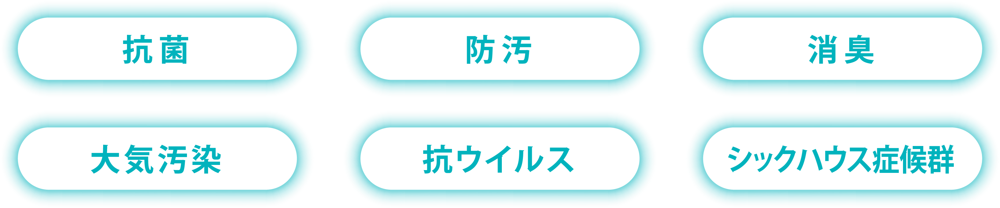
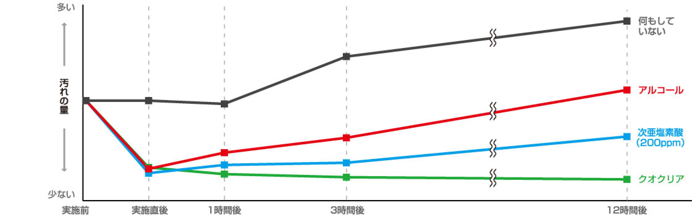
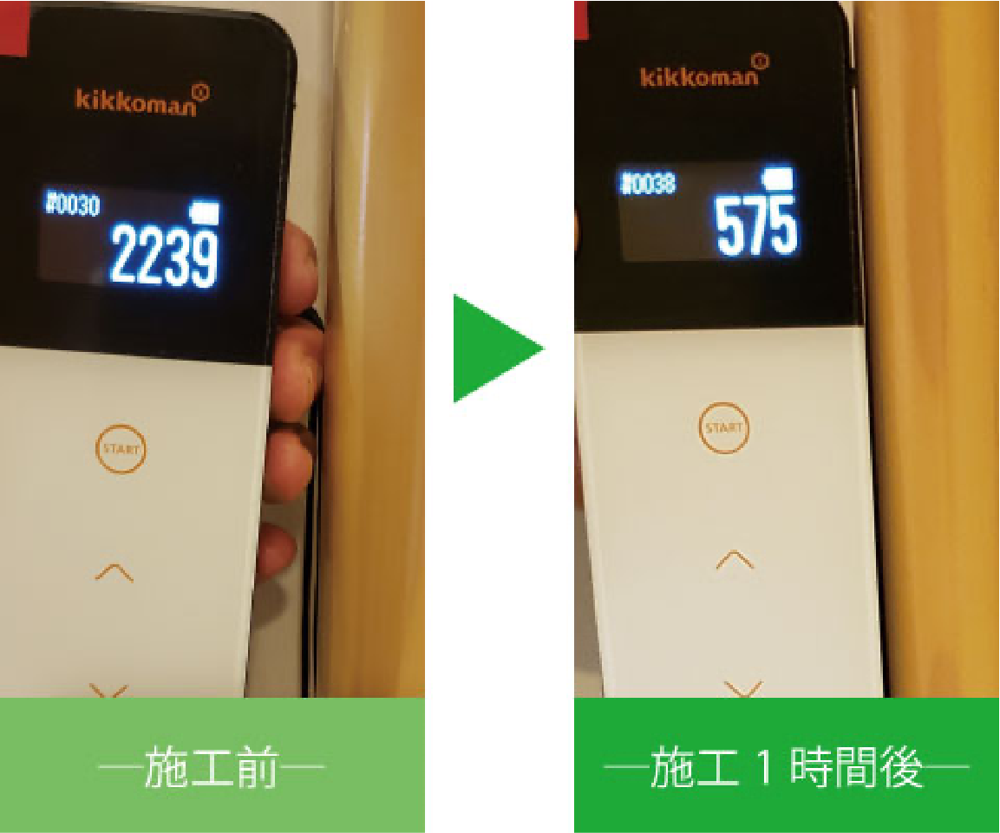
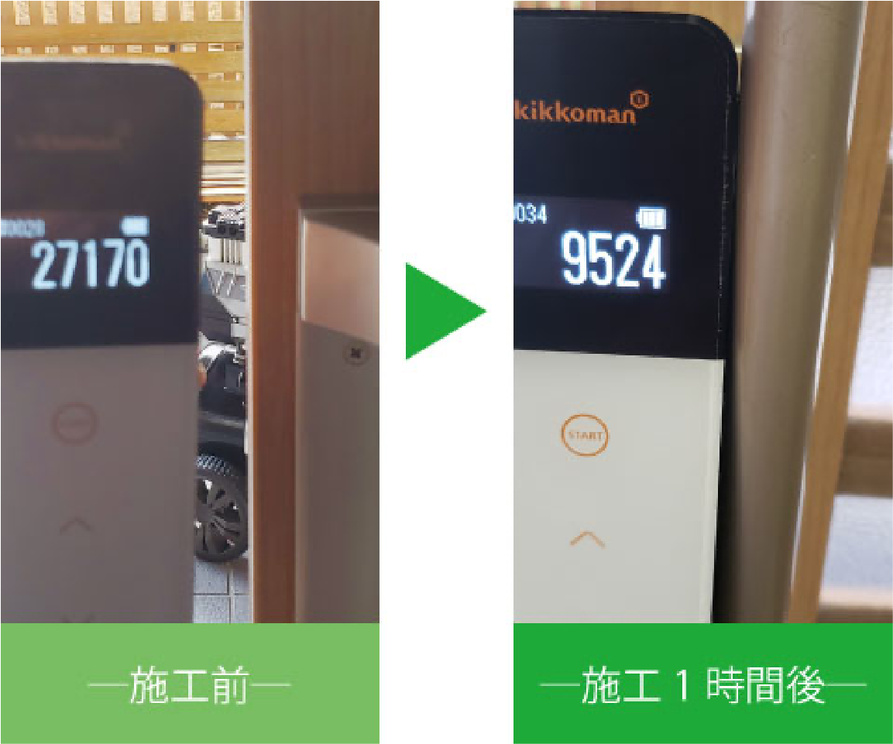
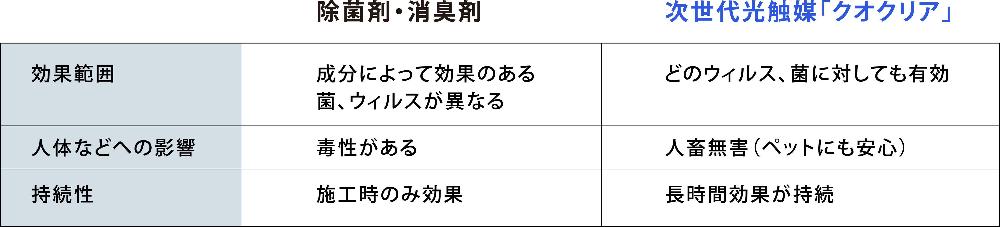

新型コロナウイルスの流行により感染症対策が注目されている昨今、街を歩くと電車の中やゲームセンターなどいたる所で「光触媒コーティング済み」などの看板を見かけるようになりました。
光触媒とは文字通り、太陽やLED蛍光灯の光があたった際に化学変化を起こさせ、抗菌・抗ウイルス効果を長期に保持させる技術です。
一度の施工で、
空間そのものを抗菌環境に

数ある光触媒の中でも、当社の扱う次世代光触媒「クオクリアは、独自の技術により、酸化チタン分子を素粒子(2nm)にまで分解し、水中に安定分散させた 無色透明のチタン素粒子分散液です。 粒子2nm以下のチタン素粒子は表面上の原子に対し電子結 合(自己結合)するため、従来の光触媒の弱点だったバインダー(接着剤)の必要がありません。
施工のシーン
資料編
アルコール消毒や次亜塩素酸と比較したATP濃度の推移
アルコールや次亜塩素酸は、施工直後は汚れの量が大きく減少しますが、時間の経過 と共に汚れの量が多くなっていきます。それに対して、光触媒は長時間経過しても効果 が持続していることが分かります。
例えばスタジアムの広大な観客席を想像してみてください。あのベンチ一つひとつを消毒するのに、何人ものアルバイトさんを雇用し、アルコールで拭き取るのが従来でしたが、これにはお金も労力もかかります。またそれを日々定期的に行わなければならないのが、アルコールや次亜塩素酸による消毒です。
●●●施工結果
《キッコーマンバイオケミファ社・ルミテスターSmartを使用したATP+ADP+AMPふき取り検査(A3法)*によるATP濃度チェック》
※検査値の目安 :クリーンルームの合格基準値=500以下
■介護施設・入り口(ドアノブ)
●介護施設・手すり
■介護施設・浴室

●●●他の抗ウイルス・抗菌対策との比較
施工例
宝泉寺
アイスタッフケアステーション大師
やまゆり保育園
皆様に施工させていただいた場所の一例
- 《おもちゃ/積み木》今までは一つひとつに至るまで保育士さんが日々アルコール消毒をされていました。
- 《トイレ》ノロウイルスやO-157等のウイルスや菌にも効果がある事と、さらには消臭や防汚効果もあります。
- 《階段/手すり》不特定多数の方々、特にお年寄りが触れる手すりです。見落としがちな上、ご高齢の方への感染症対策には必須になります。